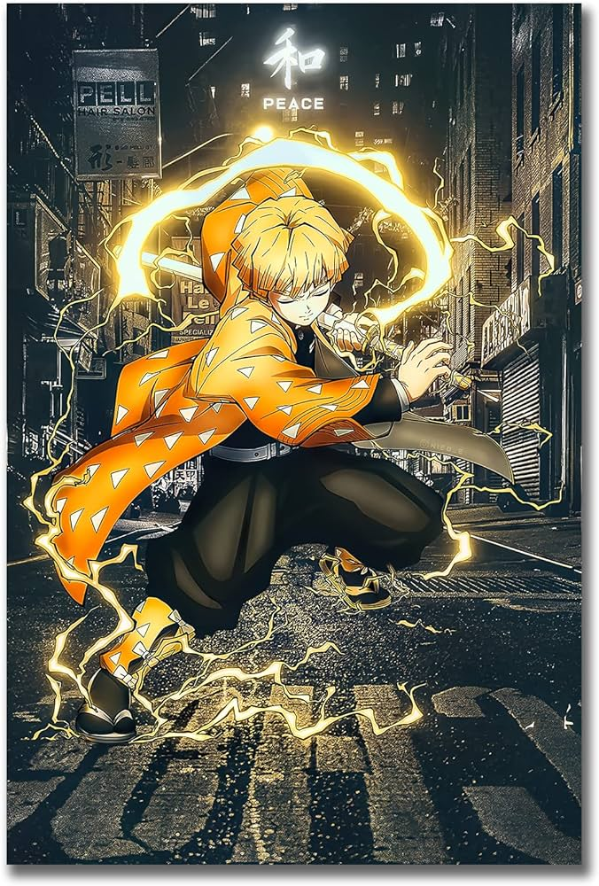
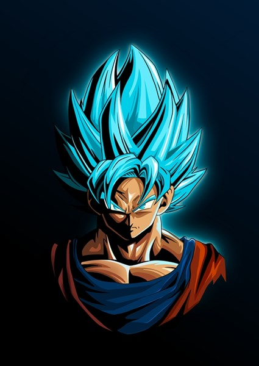

Posters
New Arrivals
-
Zenitsu 
Master Swordsman: Zenitsu is an incredibly talented swordsman, displaying highly refined proficiency in extremely fast Iaijutsu-like swordsmanship and the Thunderclap and Flash technique, to the point he can create offshoots of the technique and utilize it even while he is asleep.
R2502Goku DB Super According to Goku this form is what happens when a "Saiyan with the power of a Super Saiyan God further transforms himself into a Super Saiyan". Simply, it is the first Super Saiyan form combined with the power and godly ki of a Super Saiyan God turned cyan blue, due to a mortal absorbing it.
R2503Solo Leveling
Originally an infamously weak E-Rank hunter, he gets the chance of a lifetime when he is selected as the Player of a magical program called the System and gains the unique ability to grow in strength without limit.
R250